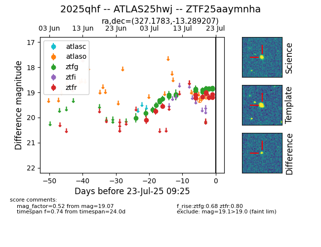

Target ZTF25aaymnha at 2025-07-23 11:48, see:
FINK: fink-portal.org/ZTF25aaymnha
Lasair: lasair-ztf.lsst.ac.uk/objects/ZTF25aaymnha
ALeRCE: alerce.online/object/ZTF25aaymnha
TNS: wis-tns.org/object/2025qhf
YSE: ziggy.ucolick.org/yse/transient_detail/2025qhf
alt names
ZTF25aaymnha (ztf,fink)
2025qhf (tns,yse)
ATLAS25hwj (atlas)
coordinates:
equatorial (ra, dec) = (327.1783,-13.28921)
galactic (l, b) = (41.5446,-45.23129)
photometry
last ztfg=18.86, ztfr=19.07
23 ztfg, 11 ztfr detections
